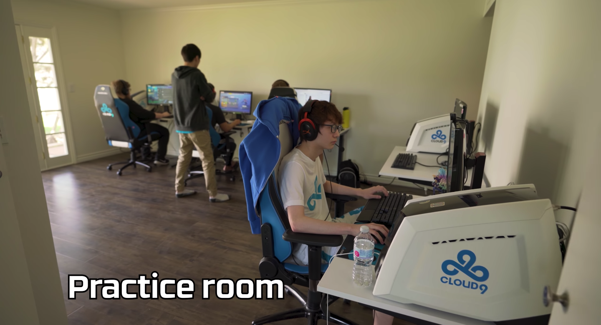
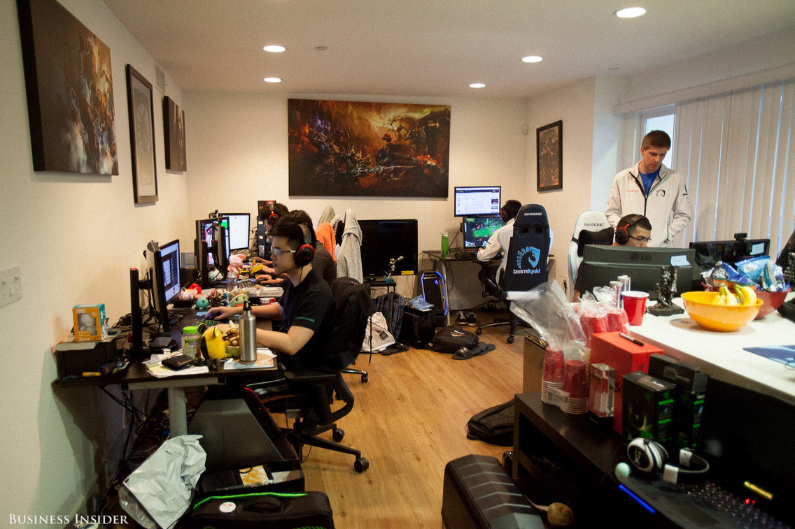
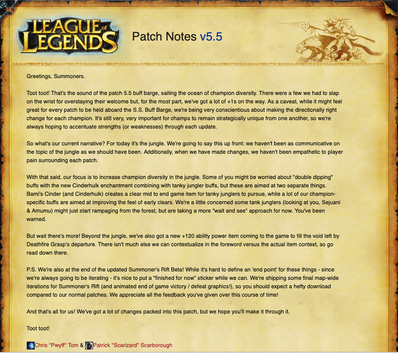

Open-Ended Practice and Patching: Structural Support of Unhealthy Work Habits
(Example of an LCS team practice room / workspace. Image via HyperX & Cloud 9).
Practice Standards and Burnout
Many professional players have been interviewed regarding their practice habits, with every player generally responding with schedules comprised of six-day work weeks that involve 12-14 hours of daily practice (either scriming against other teams or practicing in solo/duo ranked matches). The seventh remaining day of the week is commonly set aside for free time, but pros such as Alex "Xpecial" Chu (currently coach for the Harrisburg University Collegiate League of Legends team) have been quoted emphasizing that these days rarely involve adequate rest. He states in a 2015 article for Business Insider that he could have "technically [seen] friends and family" during his day off, but "because of the way League of Legends works," he argues, "there is no downtime." When he was competing, he often chose practice over leisure. Although Xpecial's comments are definitely correct, it is important to recognize that practice in League of Legends does not simply "work" a certain way inherently. Some of the overworking norms can be attributed to a genuine, intrinsic desire from LCS players to improve and compete against each other at a high level, but it is likely that the overworking environment of professional play has been constructured through historically established work norms in the LCS, the lack of practice caps, and developer patching schedules.

(Team Liquid's 2015 LCS Practice Room Featuring Xspecial [left-most]. Image via Harrison Jacobs / Business Insider)
Job security for LCS players has always been based on competitive performance, especially prior to 2018 where poor performance in a single season could result in one's entire team being demoted. This demotion, known as "relegation," would result in a team being moved to a significantly less profitable and popular league referred to as the "Challenger Series (CS)." This was a dangerous system, because unlike traditional sports—where practice is typically implicitly capped by physical limitations—LCS professionals can continue playing for extended periods of time without fail despite exhaustion. This means that teams in fear of relegation likely kept upping their practice amounts until they were completely burnt out. Luckily, relegation has been replaced with a franchising system featuring ten static teams that have partner "LCS Academy" teams that play in the CS replacement league that focuses on developing new talent for existing teams (reminiscent of traditional American sports "farm" leagues, such as the AAA in Major League Baseball). Despite the structural changes, LCS overworking norms do not seem to be in any sort of decline. In a 2018Washington Post article, with franchising already in place for a full competitive season, FlyQuest's player Lucas "Santorin" Tao Kilmer Larsen said that he often logs "up to 14 hours of gameplay per day" and only sees his close friends "once a year, for five to eight hours." This indicates that league changes have likely had zero effect on player work culture. In fact, it is possible that league changes have increased job insecurity is certain contexts.
(2016 video by eSports Content Creator Duncan "Thorin" Shields on how professional eSports practice should be viewed as work instead of play. Via YouTube / Duncan "Thorin" Shields).
Although a positive move, Riot's decision to up minimum salary compensation for LCS players to $75,000 may be causing more highly skilled League of Legends players to consider trying out for LCS teams. Additionally, Riot's collegiate circuit (championship established in 2014) has brought in more and more skilled players over the years, with current FlyQuest starting player Juan "JayJ" Guibert career beginning with a University of Toronto collegiate team. This is beneficial for the LCS as a whole, but places even more pressure on LCS players to perform as the supply of professionally skilled players waiting to replace them increases.
It is impossible to prevent this type of pressure on players, as demands for higher play quality will only continue to increase as the industry grows. Therefore, it is crucial to rather focus on adjustable factors that encourage overworking—such as patching.
Prioritizing Entertainment over Player Longevity and Financial Stability: Riot's Patching Schedule & Methodology
In an effort to maintain continued interest in League of Legends, Riot Games consistently implements "patches" that change stats of any given entity (monsters, champions, items, etc.), rework how certain champion abilities and items function, and essentially modify how the game is played. Patching is an excellent feature for a competitive game with a substantial, loyal player base, as there are immense amounts of data that can be collected and used to adjust champions and items that are considered "overpowered" or "underpowered" to create power balance. It also allows for developers to add new modes and features to easily increase player engagement, such as LoL's well-known game mode "Ultimate Rapid Fire" (URF) which has been said to increase total matches played (even if only temporarily).
(Cover Image for LoL's "URF" Gamemode. Image via Riot Games)
Patching is relevant in the LCS because all changes made in the live version of the game (although typically on a delayed schedule) are introduced into competitive play. There is not a static patch release that players compete on throughout the season, so Riot can make changes multiple times even within a single competitive split. This means that all professional players, regardless of region, must adjust the champions they play and the strategies they employ depending on what is considered "strong" in a given patch release. This can be beneficial in some cases, such as when a champion is far too weak or far too strong and requires changes, but often the benefits outweigh the costs for LCS players. TeamSoloMid owner Andy "Reginald" Dinh has compared LoL patches in interviews to basketball, saying that a new, unexpected patch is like "changing the ball’s weight so instead of shooting a basketball they were shooting a bowling ball." They can completely change how players perform and can completely remove the viability of certain playstyles. A commonly referenced example of this occuring is the 2015 patch v5.5 changes that introduced the item "Cinderhulk," which gave "Tank" or high-health, high-defense champions a significant advantage over more skirmish, damage-based champions in the Jungler role. This caused many professional junglers to struggle, giving an edge to players who were more experienced with defensive team-oriented play rather than individual play-making.

(Patch v5.5 Notes discussing the "Cinderhulk" Item. Image via Riot Games)
Another commonly critiqued patching issue is that of Riot's historical "permanent nerf" mentality when it comes to power balancing champions. Instead of "buffing" weak champions to reach the level of stronger champions, Riot consistently nerfs and buffs and nerfs and buffs champions over and over with no clear end goal in site. In an attempt to clear up the confusion behind Riot's power balancing, Riot introduced a "champion balance framework" in May of this year. While it makes the decisions behind power balancing more clear, the new framework still supports constant nerfs and buffs simply with more detailed rationale and justification. Importantly, Riot even said in its post regarding the new framework that they will "immediately address champions that are overpowered" and "then address champions that are underpowered across the board." Although a fair approach due to developer time-constraints, this means that champions that are accidentally nerfed too significantly (often referred to as "unplayable" or "gutted" champions) will be left in that state for a longer period than if they were buffed too significantly. This makes certain champions and playstyles stay out of competitive play for longer than others, disproportionately harming some players and benefitting others.
(Champion "Janna," known for being heavily nerfed. Image via Riot Games)
LCS players have also commented on how patching affects their ability to gain revenue from streaming and sponsored content, as all work hours must be given to practice and strategy development. Team Liquid's (TL) Yilang "Doublelift" Peng released a video in 2018 arguing that volatile patching has led to an inability to create consistent entertainment content, a conflict between successful champion practice methods and developer patching methodology, and (potentially) the recent dips in LoL's popularity. He claims that patching has restricted content creation and streaming hours (which help in creating sustained fanbases) because rapid changes in valid competitive strategies have required constant "12 hour" scrim days to keep up. This type of free-for-all balancing from Riot is stated to be even against Riot's own historical recommendations to specialize in certain champions in order to improve. If a player is to invest hundreds of hours specializing and practicing on a champion, only to find their set of abilities and stats completely changed to be unviable in play, that player is essentially punished for attempting to learn how to play the game in a certain way. When applying this to LCS, it can completely undermine a player's ability to effectively compete (TL Doublelift is known for gameplay on the champion "Lucian," who has experienced many detrimental nerfs since his release in 2013). Doublelift proposes that Riot instead chooses to release hefty, content/balance ridden patches with large intervals between each patch. This, he rationalizes, would allow players enough time to learn certain champions and develop complex strategies on existing patches (that would not have been developed if release states were changed as quickly as they are now), while also preventing gameplay from becoming stale because Riot could simply enact a patch if players began to develop strategies that were consistently shown to be too optimal.
(TL Doublelift's Video Essay on Patching. Via YouTube / Yilang Peng)
Conclusion
The LCS's competitive work culture and volatile patching schedule has continued to force players (whether implicitly or explicitly) to overwork themselves and lose potential revenue. This type of overworking is likely the reason for player burnout and short careers, with a team owner being quoted stating that the average LoL pro career is around "a year to two years" (quote from 2016, it may have changed slightly since then), with some direct attribution to Riot's patching decisions. It may also be the reason why many players are experiencing fairly preventable wrist injuries, with an 2017 ESPN study surveying 33 LCS and LEC (League of Legends European Championship) players receiving responses of 24% "Yes" to a question on whether or not they have had professional gaming-related injuries.
Riot must make changes to allow players more practice-free hours while also not removing patching all-together. A policy that still allows for exciting gameplay changes without forcing players to practice 12-14 hours a day and lose potential streaming or sponsorship revenue must be enacted if Riot hopes to retain its star players and maintain a well-performing, stable league.